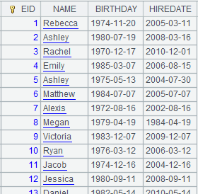

Description:
Generate multiple derivative variables for a datetime sequence variable.
Syntax:
|
A.datederive(T) |
During modeling, generate multiple variables for datetime variable A for building models and return a binary sequence where the first bit is a table sequence made up of all the derivative variables and the second bit is generation process records Rec; the derivative variables automatically perform subsequent pre-processing. |
|
A.datederive@r(Rec) |
During scoring, generate a table sequence consisting of multiple derivative variables used for model building according to datetime variable A and generation process records Rec. |
Note:
MathCli external library function (See External Library Guide).
It generates multiple derivative variables for a datetime sequence variable A.
Parameter:
|
A |
A sequence of datetime variable values. |
|
T |
The target variable value used to perform potential data smoothing. |
|
Rec |
A sequence of generation process records. |
Option:
|
@bnie |
Each option specifies a target type, and options are mutual-exclusive; automatically judge the type when no option is used; the order of priorities of the options is binary, numeric, integer and enumerated. |
Return value:
Sequence/Table sequence
Example:
|
|
A |
|
|
1 |
=100.(date(2020,rand(11)+1,rand(28)+1)) |
Generate training data, which is a sequence of datetime variable values. |
|
2 |
=100.(date(2021,rand(11)+1,rand(28)+1)) |
Generate scoring data, which is a sequence of date variable values. |
|
3 |
=100.(rand(500)) |
Generate a target variable. |
|
4 |
=A1.datederive@i(A3) |
A4(1) A table sequence of derivative variables; A4(2) Generation process records Rec. @i specifies the target variable as integer. |
|
5 |
=A2.datederive@r(A4(2)) |
 Generate derivative variables on the scoring data according to A4¡¯s generation process records Rec. |